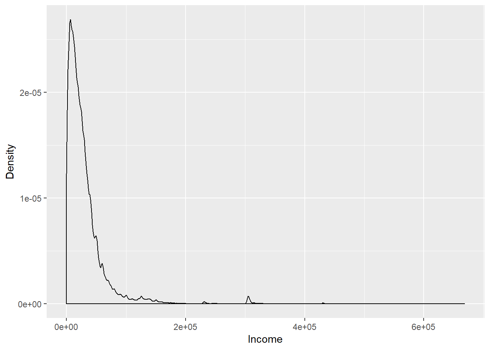
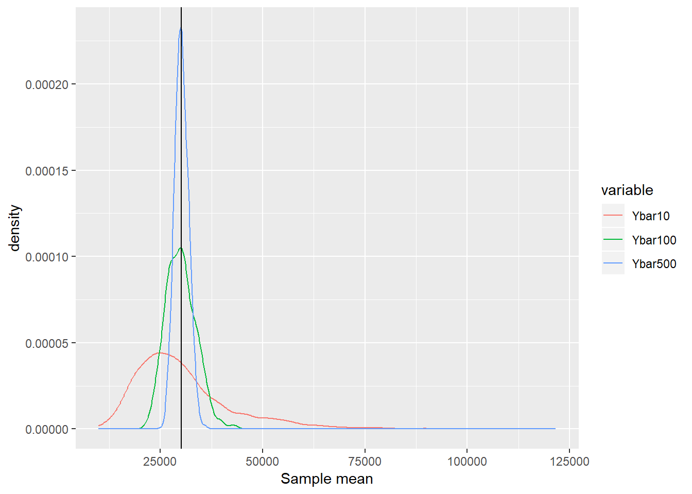

7 A Review of Statistics
Acknowledgement: This chapter is largely based on chapter 3 of “Introduction to Econometrics with R”. https://www.econometrics-with-r.org/index.html
The goal of this chapter is
- Review of important concepts in statistics
- Estimation
- Hypothesis testing
- Review of tools from probability theory
- Law of large numbers
- Central limit theorem
7.1 Estimation
- Estimator: A mapping from the sample data drawn from an unknown population to a certain feature in the population
- Example: Consider hourly earnings of college graduates \(Y\) .
- You want to estimate the mean of \(Y\), defined as \(E[Y] = \mu_y\)
- Draw a random sample of \(n\) i.i.d. (identically and independently distributed) observations \({ Y_1, Y_2, \ldots, Y_N }\)
- How to estimate \(E[Y]\) from the data?
- Idea 1: Sample mean \[ \bar{Y} = \frac{1}{n} \sum_{i=1}^n Y_i, \]
- Idea 2: Pick the first observation of the sample.
- Question: How can we say which is better?
7.1.1 Properties of the estimator
Consider the estimator \(\hat{\mu}_N\) for the unknown parameter \(\mu\).
Unbiasdeness: The expectation of the estimator is the same as the true parameter in the population. \[ E[\hat{\mu}_N] = \mu \]
- Consistency: The estimator converges to the true parameter in probability. \[
\forall \epsilon >0, \lim_{N \rightarrow \infty} \ Prob(|\hat{\mu}_{N}-\mu|<\epsilon)=1
\]
- Intuition: As the sample size gets larger, the estimator and the true parameter is close with probability one.
- Note: a bit different from the usual convergence of the sequence.
7.1.2 Sample mean \(\bar{Y}\) is unbiased and consistent
- Showing these two properties using mathmaetics is straightforward:
- Unbiasedness: Take expectation.
- Consistency: Law of large numbers.
Let’s examine these two properties using R.
- Step 1: Prepare a population. Here, I prepare income and age data from PUMS 5% sample of U.S. Census 2000.
- PUMS: Public Use Microdata Sample
- Download the example data here as a .csv file. Put this file in the same folder as your R script file.
# Use "readr" package
library(readr)
pums2000 <- read_csv("data_pums_2000.csv") ## Parsed with column specification:
## cols(
## AGE = col_double(),
## INCTOT = col_double()
## )- We treat this dataset as population.
pop <- as.vector(pums2000$INCTOT)- Population mean and standard deviation
pop_mean = mean(pop)
pop_sd = sd(pop)
# Average income in population
pop_mean## [1] 30165.47# Standard deviation of income in population
pop_sd## [1] 38306.17# income distribution in population
# Note that the unit is in USD.
library("ggplot2")
qplot(pop, geom = "density",
xlab = "Income",
ylab = "Density")
- The distribution has a long tail.
- Let’s plot the distribution in log scale
# `log` option specifies which axis is represented in log scale.
qplot(pop, geom = "density",
xlab = "Income",
ylab = "Density",
log = "x")
- Let’s investigate how close the sample mean constucted from the random sample is to the true population mean.
- Step 1: Draw random samples from this population and calculate \(\bar{Y}\) for each sample.
- Set the sample size \(N\).
- Step 2: Repeat 2000 times. You now have 2000 sample means.
# Set the seed for the random number. This is needed to maintaine the reproducibility of the results.
set.seed(123)
# draw random sample of 100 observations from the variable pop
test <- sample(x = pop, size = 100)
# Use loop to repeat 2000 times.
Nsamples = 2000
result1 <- numeric(Nsamples)
for (i in 1:Nsamples ){
test <- sample(x = pop, size = 100)
result1[i] <- mean(test)
}
# Simple approach
result1 <- replicate(expr = mean(sample(x = pop, size = 10)), n = Nsamples)
result2 <- replicate(expr = mean(sample(x = pop, size = 100)), n = Nsamples)
result3 <- replicate(expr = mean(sample(x = pop, size = 500)), n = Nsamples)
# Create dataframe
result_data <- data.frame( Ybar10 = result1,
Ybar100 = result2,
Ybar500 = result3)- Step 3: See the distribution of those 2000 sample means.
# Use reshape library
# install.packages("reshape")
library("reshape")## Warning: package 'reshape' was built under R version 3.5.3# Use "melt" to change the format of result_data
data_for_plot <- melt(data = result_data, variable.name = "Variable" )## Using as id variables# Use "ggplot2" to create the figure.
# The variable `fig` contains the information about the figure
fig <-
ggplot(data = data_for_plot) +
xlab("Sample mean") +
geom_line(aes(x = value, colour = variable ), stat = "density" ) +
geom_vline(xintercept=pop_mean ,colour="black")
# Display the figure
plot(fig)
- Observation 1: Regardless of the sample size, the average of the sample means is close to the population mean. Unbiasdeness
- Observation 2: As the sample size gets larger, the distribution is concentrated around the population mean. Consistency (law of large numbers)
7.2 Hypothesis Testing
7.2.1 Central limit theorem
Cental limit theorem: Consider the i.i.d. sample of \(Y_1,\cdots, Y_N\) drawn from the random variable \(Y\) with mean \(\mu\) and variance \(\sigma^2\). The following \(Z\) converges in distribution to the normal distribution. \[ Z = \frac{1}{\sqrt{N}} \sum_{i=1}^N \frac{Y_i - \mu}{\sigma } \overset{d}{\rightarrow}N(0,1) \] In other words, \[ \lim_{N\rightarrow\infty}P\left(Z \leq z\right)=\Phi(z) \]
The central limit theorem implies that if \(N\) is large enough, we can approximate the distribution of \(\bar{Y}\) by the standard normal distribution with mean \(\mu\) and variance \(\sigma^2 / N\) regardless of the underlying distribution of \(Y\).
Let’s examine this property through simulation!!
- Use the same example as before. Remember that the underlying income distribution is clearly NOT normal.
- Population mean \(\mu = 30165.4673315\) and standard deviation \(\sigma = 38306.1712336\). Use these numbers.
# Set the seed for the random number
set.seed(124)
# define function for simulation
f_simu_CLT = function(Nsamples, samplesize, pop, pop_mean, pop_sd ){
output = numeric(Nsamples)
for (i in 1:Nsamples ){
test <- sample(x = pop, size = samplesize)
output[i] <- ( mean(test) - pop_mean ) / (pop_sd / sqrt(samplesize))
}
return(output)
}
# Comment: You can do better without using forloop. Let me know if you come with a good idea.
# Run simulation
Nsamples = 2000
result_CLT1 <- f_simu_CLT(Nsamples, 10, pop, pop_mean, pop_sd )
result_CLT2 <- f_simu_CLT(Nsamples, 100, pop, pop_mean, pop_sd )
result_CLT3 <- f_simu_CLT(Nsamples, 1000, pop, pop_mean, pop_sd )
# Random draw from standard normal distribution as comparison
result_stdnorm = rnorm(Nsamples)
# Create dataframe
result_CLT_data <- data.frame( Ybar_standardized_10 = result_CLT1,
Ybar_standardized_100 = result_CLT2,
Ybar_standardized_1000 = result_CLT3,
Standard_Normal = result_stdnorm)
# Note: If you wanna quicky plot the density, type `plot(density(result1))`. - Now take a look at the distribution.
# Use "melt" to change the format of result_data
data_for_plot <- melt(data = result_CLT_data, variable.name = "Variable" )## Using as id variables# Use "ggplot2" to create the figure.
fig <-
ggplot(data = data_for_plot) +
xlab("Sample mean") +
geom_line(aes(x = value, colour = variable ), stat = "density" ) +
geom_vline(xintercept=0 ,colour="black")
plot(fig)
- As the sample size grows, the distribution of \(Z\) converges to the standard normal distribution.
7.2.2 Hypothesis testing
To be added.